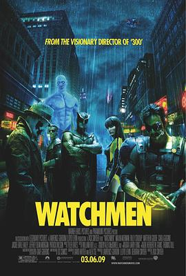

守望者 / Watchmen
又名：保卫奇侠(港) / 守护者(台)
去年看了忘了标
作品信息
| 导演 | 扎克·施奈德 |
| 编剧 | 大卫·海特 / 亚历克斯·谢 / 戴夫·吉布森 / 阿兰·摩尔 |
| 主演 | 帕特里克·威尔森 / 卡拉·古奇诺 / 比利·克鲁德普 / 玛琳·阿克曼 / 杰弗里·迪恩·摩根 / 马修·古迪 / 杰基·厄尔·哈利 / 马特·弗里沃 / 史蒂芬·麦克哈蒂 / 劳拉·门内尔 / 詹姆斯·M.康纳 |
| 类型 | 动作 / 科幻 / 悬疑 |
| 制片国家/地区 | 美国 |
| 语言 | 英语 |
| 上映日期 | 2009-03-06(美国) |
| 片长 | 162分钟 / 186分钟(导演剪辑版) / 215分钟(终极剪辑版) |
| IMDb | tt0409459 |
最后一次看到是 2026-08-12T21:11:26+08:00 · 豆瓣原页